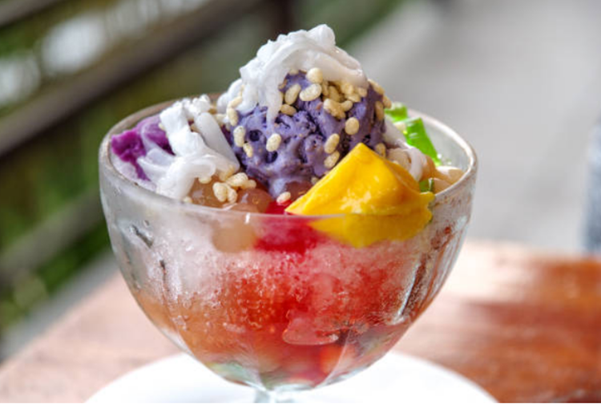

All Recipes

Chicken Adobo
Savory chicken stew with soy sauce, vinegar, and garlic.

Sinigang na Baboy
Tangy tamarind soup with pork and veggies.

Pancit Bihon
Stir-fried rice noodles with vegetables and meat.

Lechon Kawali
Crispy deep-fried pork belly, golden brown and tasty.

Kare-Kare
Peanut stew with oxtail and vegetables. Best with bagoong!

Halo-Halo
Icy dessert with sweet beans, ube, leche flan, and more.

Bicol Express
Spicy pork in coconut milk with chili peppers.

Laing
Taro leaves in coconut milk, spicy and rich.
Puto
Soft steamed rice cakes, topped with cheese or egg.